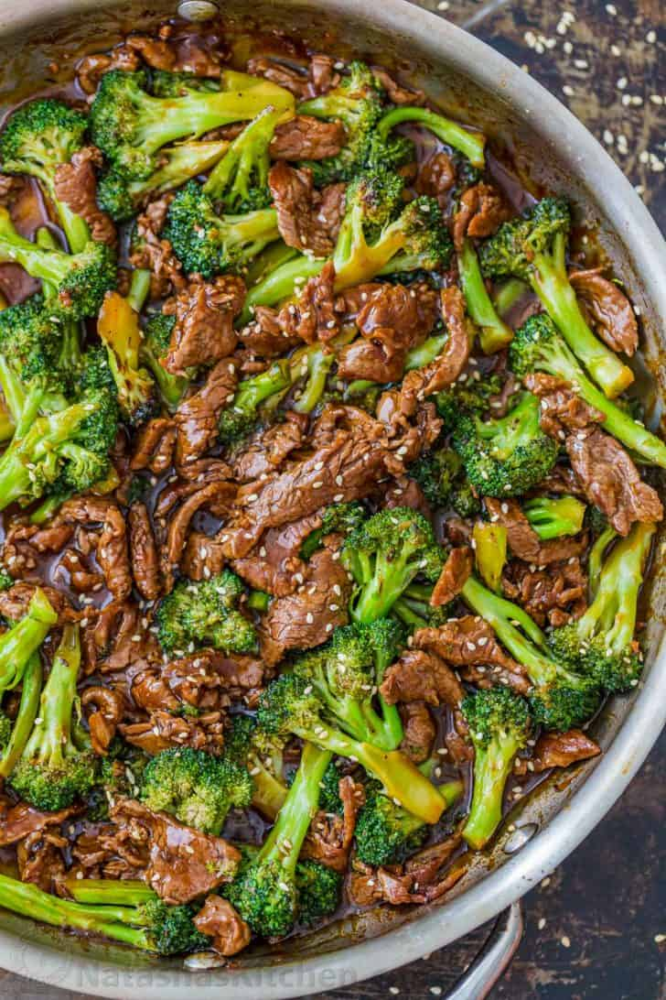

Beef and Broccoli Recipe
Home

Description
Beef is delicious and protein-packed to give you the sustained strength
you need to get through the back to school season. We also made sure to
add plenty of broccoli for a balanced meal. Beef is so versatile for stir
fry. You can add your favorite vegetables to this recipe like snap peas,
bell peppers, carrots, and even mushrooms.
The best beef cuts for stir fry are tender and lean. We love Flank Steak
which is lean and easy to chew when thinly sliced against the grain. More
great beef cuts for stir fry include:
- Top Sirloin Steak
- Top Round Steak
- Tri-Tip Steak
Ingredients
Beef and Broccoli Ingredients
- 1 lb flank steak, very thinly sliced into bite-sized strips
- 2 Tbsp olive oil , (or vegetable oil), divided
- 1 lb broccoli, (cut into 6 cups of florets)
- 2 tsp sesame seeds, optional garnish
Stir Fry Sauce Ingredients
- 1 tsp fresh ginger, grated (loosely packed)
- 2 tsp garlic, grated (from 3 cloves)
- 1/2 cup hot water
- 6 Tbsp low sodium soy sauce, (or GF Tamari)
- 3 Tbsp packed light brown sugar
- 1 1/2 Tbsp corn starch
- 1/4 tsp black pepper
- 2 Tbsp sesame oil
Steps
-
Prep: Start cooking white rice first so it's ready when
the stir fry is done. Cover and freeze steak 30 minutes for easier
slicing.
-
Combine all stir fry sauce ingredients in a bowl, stir well to dissolve
the sugar, and set aside.
-
Place a large skillet over medium heat and add 1 Tbsp oil. Add broccoli
florets and sauté 4-5 minutes, partially covered with lid, stirring or
tossing several times until broccoli is bright green and crisp-tender
then remove from pan. Tip: If you prefer softer broccoli, add 2 Tbsp
water before covering with the lid and it will steam cook the broccoli.
-
Increase heat to high heat and add 1 Tbsp oil. Add beef in a single
layer and sauté 2 minutes per side or just until cooked through. Quickly
pull out a piece to test for doneness.
-
Add the sauce, reduce heat to medium/low and simmer 3-4 minutes. It will
thicken. Add broccoli and stir to combine. Stir in 1-2 Tbsp water to
thin the sauce if desired. Serve over white rice.